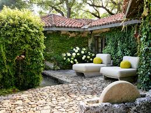

1.Backyard Gardens
This is cultivating food in the homeland. Its produce is mostly shared between friends, family, and neighbors as it typically leads to a harvest surplus. The food can be preserved and conserved as well. Backyard gardens benefit communities as neighbors can share each other’s backyard and use different farming methods leading to better yields.